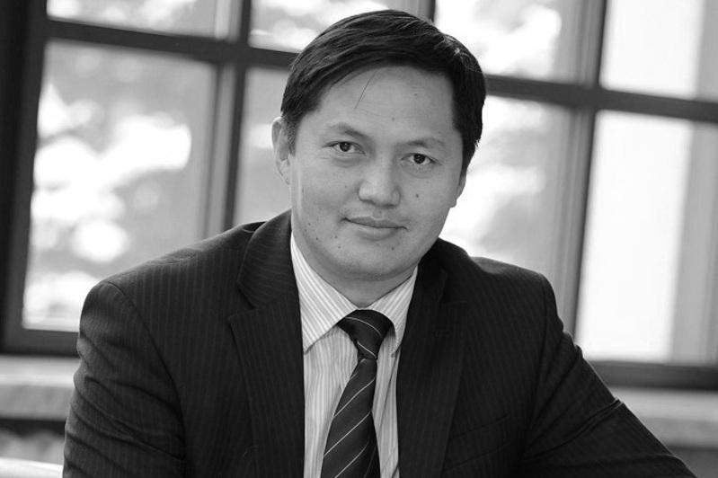

About Beisen Kuranbek
Beisen Kuranbek was a Kazakhstani journalist, public figure and TV presenter. He was born on 9 December 1971 in the village of Kyzylzhar, Kerbulak District, Almaty Region, and died on 18 May 2020 in Taldykorgan. After graduating from Al-Farabi Kazakh National University, he began his career at the newspaper "Sport" and later worked at Rakhat, 31 Channel, Khabar and the Presidential Television and Radio Complex. As the host of the talk show "Aitugha Onai" ("Easy to Say") on the national channel, he won a special place in viewers' hearts.
He also headed the Almaty regional Zhetysu TV channel, and in 2017 he was named an honorary citizen of Taldykorgan.
Key Events in His Life
- 1971 — Born in the village of Kyzylzhar, Kerbulak District, Almaty Region.
- 2007–2012 — Served as general director of the Almaty regional Zhetysu TV channel.
- 2013 — Became host and project leader of the talk show "Aitugha Onai".
- 2014 — Returned to the post of general director of Zhetysu TV.
- 2017 — Named an honorary citizen of the city of Taldykorgan.
- 2020 — Passed away on 18 May in Taldykorgan.
Main Work and Awards
- Host and leader of the social talk show "Aitugha Onai"
- General director of Zhetysu TV (2007–2012 and 2014–2020)
- Winner of the President of Kazakhstan Prize (2006)
- "Til Zhanashyry" ("Champion of the Language") honorary title (2015)
- "Eren Yenbegi Ushin" ("For Distinguished Labor") medal (2016)
- Cultural Worker of the Republic of Kazakhstan